12 Reading digital and analog
12.3 Digital read
- Goal: Read button press and take an action (flash external LED).
Use the following code.
Download codeconst int buttonPin = A4; // Pin where the button is connected
const int ledPin = D9; // Pin where the LED is connected
// Variable to store the button state
int buttonState = 0;
void setup() {
// Initialize the LED pin as an output
pinMode(ledPin, OUTPUT);
// Initialize the button pin as an input
pinMode(buttonPin, INPUT_PULLUP); // Use the internal pull-up resistor
// Start serial communication for debugging (optional)
Serial.begin(115200);
}
void loop() {
// Read the state of the button
buttonState = digitalRead(buttonPin);
// Check if the button is pressed
if (buttonState == LOW) { // Assuming the button connects to ground when pressed
Serial.println("Button pressed! Blinking LED...");
// Blink the LED rapidly for 2 seconds (20 times per second)
unsigned long startMillis = millis();
while (millis() - startMillis < 2000) { // Run for 2000ms (2 seconds)
digitalWrite(ledPin, HIGH); // Turn the LED on
delay(50); // Wait for 50ms
digitalWrite(ledPin, LOW); // Turn the LED off
delay(50); // Wait for 50ms
}
// Optional: You can add a small delay here to debounce the button
delay(200); // Debounce the button for 200ms
}
// Add a small delay to avoid excessive readings
delay(50);
}see diagram
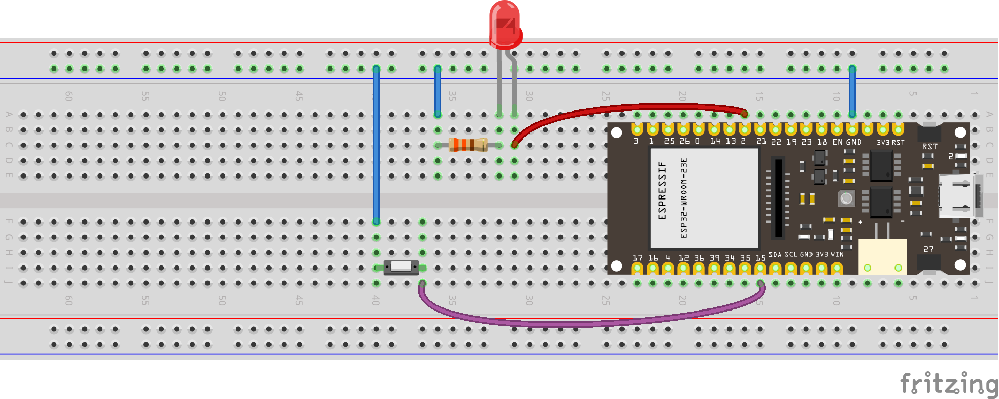see wiring scheme
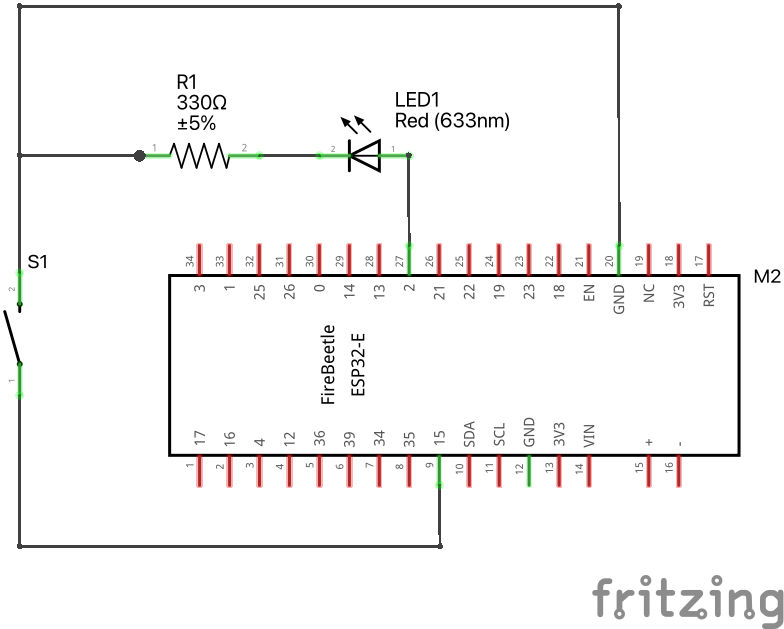12.4 Touch sensor
Download code#include <Arduino.h>
// Define the touch sensor pin
#define TOUCH_PIN D12 // You can change this to another touch pin if needed
void setup() {
// Initialize serial communication at 115200 baud
Serial.begin(115200);
// Wait for the serial monitor to connect
while (!Serial) {
; // Wait for serial port to connect. Needed for native USB port only
}
}
void loop() {
// Read the value from the touch sensor
int touchValue = touchRead(TOUCH_PIN);
// Print the touch sensor value
Serial.print("Touch value: ");
Serial.println(touchValue);
// Check if the touch sensor is activated (value will be lower when touched)
if (touchValue < 30) { // You might need to adjust this threshold value
Serial.println("Touch detected!");
}
// Add a small delay to avoid spamming the serial monitor
delay(100);
}12.5 Control LED with touch sensor
Download code#include <Arduino.h>
// Define the touch sensor pin
#define TOUCH_PIN T0 // You can change this to another touch pin if needed
// Define the built-in LED pin
#define LED_PIN LED_BUILTIN // Most ESP32 boards use GPIO 2 for the built-in LED
void setup() {
// Initialize serial communication at 115200 baud
Serial.begin(115200);
// Wait for the serial monitor to connect
while (!Serial) {
; // Wait for serial port to connect. Needed for native USB port only
}
// Set the LED pin as an output
pinMode(LED_PIN, OUTPUT);
}
void loop() {
// Read the value from the touch sensor
int touchValue = touchRead(TOUCH_PIN);
// Print the touch sensor value
Serial.print("Touch value: ");
Serial.println(touchValue);
// Check if the touch sensor is activated (value will be lower when touched)
if (touchValue < 30) { // You might need to adjust this threshold value
Serial.println("Touch detected!");
digitalWrite(LED_PIN, HIGH); // Turn on the LED
} else {
digitalWrite(LED_PIN, LOW); // Turn off the LED
}
// Add a small delay to avoid spamming the serial monitor
delay(100);
}12.6 Reading an Analog Pin, convert to digital with built-in ADC
We will read the signal (middle) pin of the potentiometer, and use the 12-bit built-in Analog to Digital Converter.
Download codesee diagram
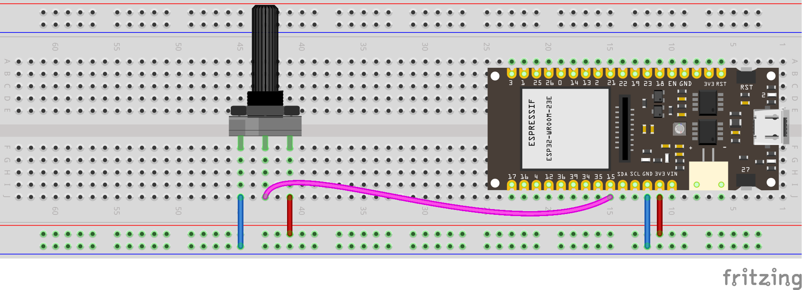see wiring scheme
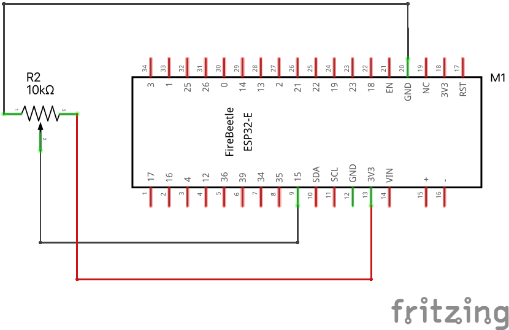Why is the maximum number 4095? What does this have to do with 12-bits?
12.7 Reading an Analog Pin, convert to voltage
Use the same wiring as above. We will convert bits to volts now: \(4095 \text{ bits} = 3.3\text{ volts}\).
Download codeconst int analog_pin = A4; // Pin into which we connect the input voltage
int val ; // variable to store the value read
float voltage;
void setup() {
Serial.begin(115200); //
}
void loop() {
val = analogRead(analog_pin); // read the input pin
voltage = (3.3/4095)*val; // convert to voltage according to ADC
Serial.print("Voltage: ");
Serial.print(voltage); // print value
Serial.println(" V");
delay(100);
}12.8 Reading Potentiometer with Analog Pin, convert to angle
Put a piece of cardboard in your potentiometer’s slit. Your goal is to build a calibration curve, that is, a function that converts reading from something you don’t care about (increments from 0 to 4095) to something that you do care about (angle).
The simplest thing you can do is to measure the increments (\(i\)) that you get for two given angles (say, \(\theta\) equals zero and 90 degrees). Let’s say you measured \((i_1,\theta_1)\) and \((i_2,\theta_2)\). If the potentiometer is linear, we will get a linear relationship between angle and increment:
\[ \theta = a i + b \]
Substitute these two points in the equation above:
\[ \theta_1 = a i_1 + b \tag{12.1}\]
\[ \theta_2 = a i_2 + b \tag{12.2}\]
Now let’s subtract Equation 12.3 from Equation 12.1:
\[ \theta_1 - \theta_2 = a (i_1 - i_2) \tag{12.3}\]
Now solve for the slope \(a\):
\[ a = (\theta_1 - \theta_2) / (i_1 - i_2) \tag{12.4}\]
To find the intercept \(b\), just substitute \(a\) into Equation 12.1 and solve for \(b\):
\[ b = \theta_1 - a i_1 \tag{12.5}\]
put the lines below in the code we ran before, they are not in the correct place, it is here just so you have an idea how to update the previous code.
12.9 Voltage divider
Many sensors have calibration curves that relate their resistance changes to the measured variable. For example, the resistance of photoresistors and thermistors changes with light and temperature, respectively. To handle this, we need to understand Voltage Dividers.
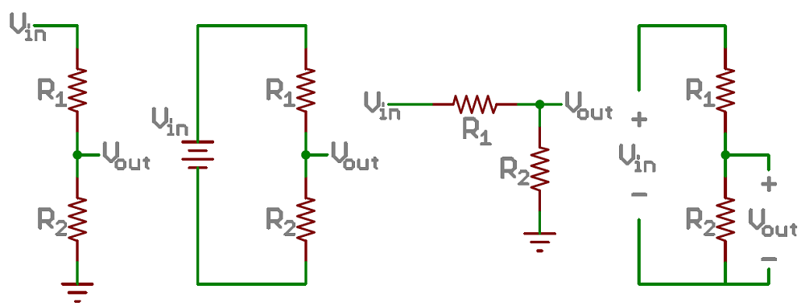
How to derive the equation for the voltage divider?
First, write Ohm’s law for the two components in series:
\[ V_{in} = (R_1 + R_2) I \tag{12.6}\]
Now write Ohm’s law just for the second component
\[ V_{out} = R_2 I \tag{12.7}\]
Now solve Equation 12.7 for \(I\)
\[ I = \frac{V_{out}}{R_2} \tag{12.8}\]
… and substitute it into Equation 12.6:
\[ V_{in} = (R_1 + R_2) \frac{V_{out}}{R_2} \tag{12.9}\]
Solving for \(V_{out}\) yields the famous equation for the voltage divider:
\[ V_{out} = \frac{R_2}{R_1 + R_2} V_{in} \tag{12.10}\]
We usually need to find the value of the resistance \(R_2\):
\[ R_2 = \frac{V_{in} - V_{out}}{V_{out}} R_2 \]
12.10 Photoresistor
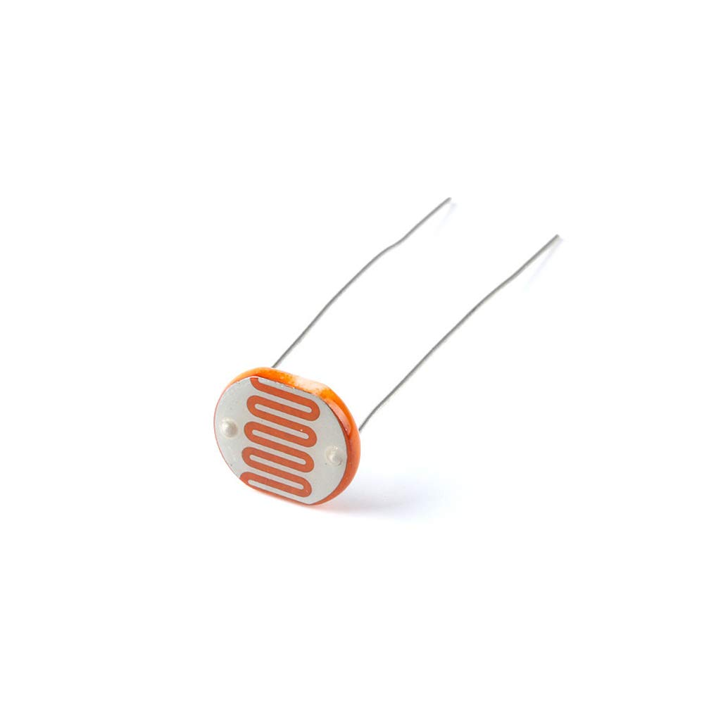 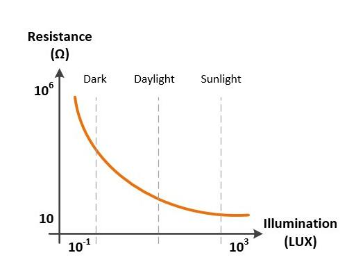
Play with your photoresistor. Measure its resistance when it receives bright light and when it doesn’t receive any light at all. This will give you an idea of what value of resistor to use together with your photoresistor when building your voltage divider. Build the following circuit:
3V3 → resistor → * photoresistor → GND
Connect pin A4 to the asterisk, this is your \(V_\text{out}\) in the voltage divider.
We will read the increments from the photoresistor, using a code from before:
Download code12.11 Thermistor
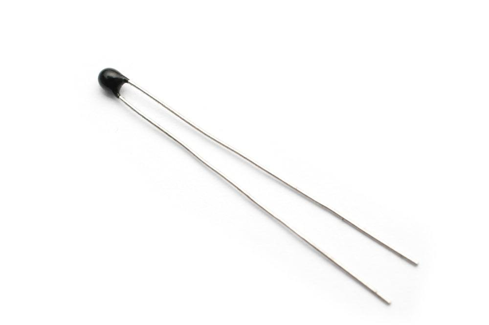 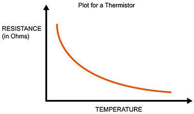
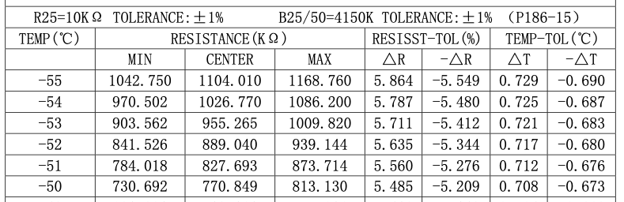 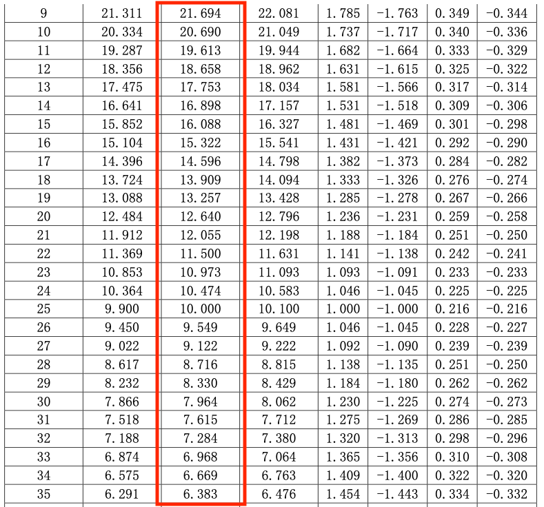
We will use the \(\beta\) model
\[ R = R_{25} \exp\left[ \beta \left(\frac{1}{T} - \frac{1}{298.15} \right) \right], \]
where
- \(R\) is given in ohms,
- \(R_{25}\) is the resistance for 25 °C,
- \(T\) is temperature in Kelvin.
Of course, we want the temperature (°C) as a function of the resistance:
\[ T = \left[ \frac{1}{\beta} \ln\left(\frac{R}{R_{25}}\right) + \frac{1}{298.15} \right]^{-1} - 273.15 \]
For our thermistor, \[ \beta = 4150 \]
// Thermistor
// reading the temperature via the ESP32's ADC
const int analog_pin = A4; // Pin into which we connect the input voltage
int val ; // variable to store the value read
float v2; // variable to store the voltage of v2
int r1 = 10000; // R1 value (in the voltage divider)
float v1 = 3.3; // V1 value
int b_val = 4150; // B value of the resistor (from the data sheet)
float r2; // variable to store the resistance of r2 (thermistor resistance)
float t; // variable to store the temperature
int adc_steps = 4095; // the number of increments our ADC has (ESP32 = 12bit)
float r_25 = 10000; // the thermistor resistance at 25C (from the data sheet)
// function to convert resistance to temperature according to the b value
// equation in this link:
// https://www.thinksrs.com/downloads/programs/therm%20calc/ntccalibrator/ntccalculator.html
float resistance_to_temperature(int b, float r, float r_25) {
return b/(log(r/r_25)+(b/298.15))-273.15;
}
void setup() {
Serial.begin(115200); //
}
void loop() {
val = analogRead(analog_pin); // read the input pin (reading v2)
v2 = (v1/adc_steps)*val; // convert to voltage of v2 according to ADC
r2 = (v2*r1)/(v1-v2);
t = resistance_to_temperature(b_val, r2, r_25);
Serial.print("Temperature: ");
Serial.print(t); // print temperature
Serial.println(" C");
delay(100);
}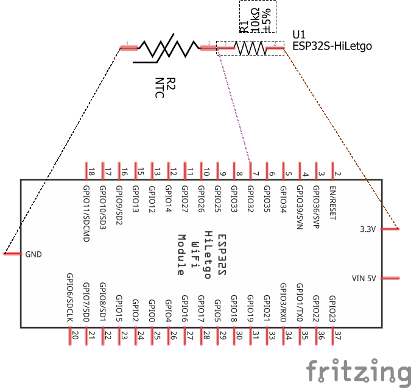
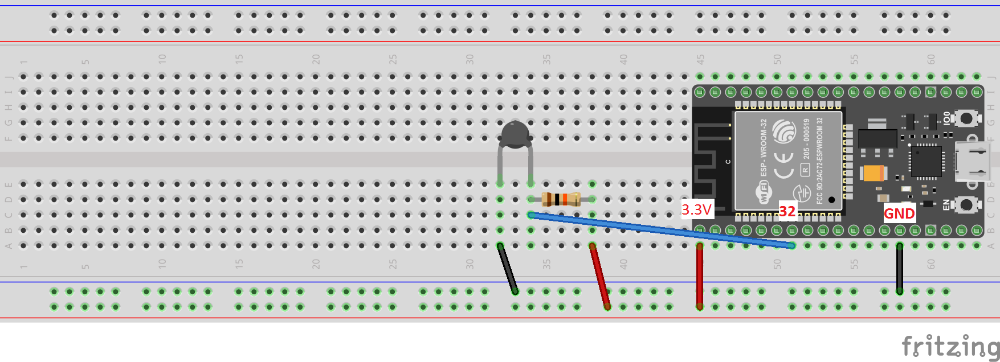